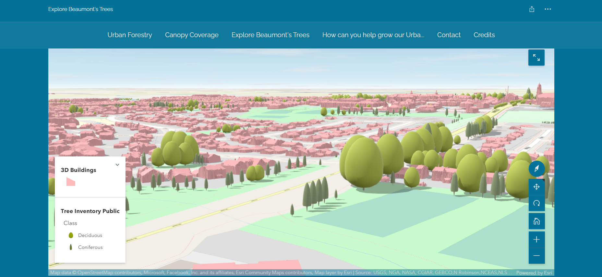

ArcGIS Story Map
The screenshots below provide a record of the various elements of our ArcGIS Story Map implementation. Click this button to explore the Story Map directly:
Try itStory Map Landing
Landing panel set up when users first arrive at Story Map.
Summary of Canopy Coverage Percentage.
Canopy coverage percentages calculated from LiDAR created tree polygons throughout the city. Our growth model was also used to predict future canopy coverage percentage.

3D Scene
3D map allowing for exploring the tree inventory in the city. Trees are symbolized according to class as well as height. 3D buildings were also created from LiDAR data to provide more context to the viewer.
Park Map Tour
Map tour allowing visitors to travek to each Park in the city. Digitized canopy is shown for each park.